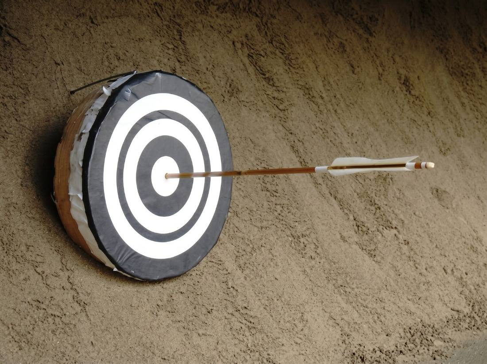
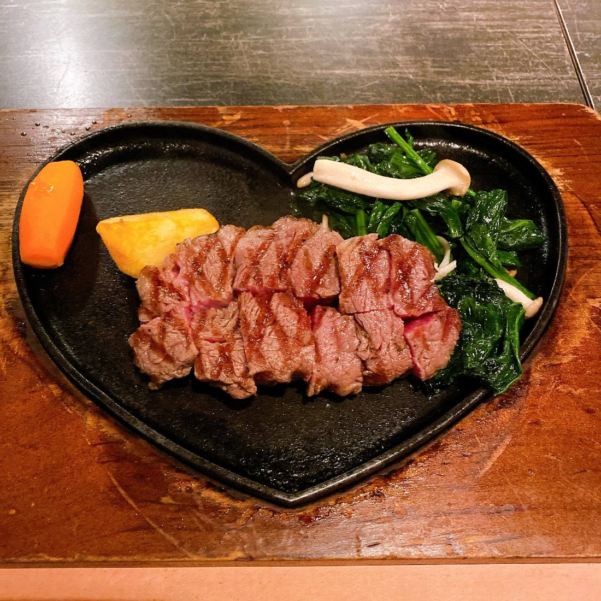
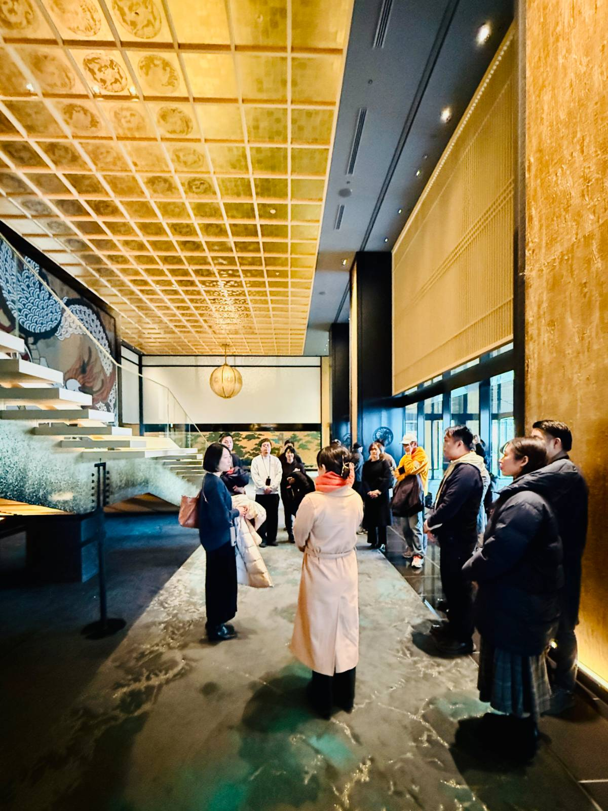
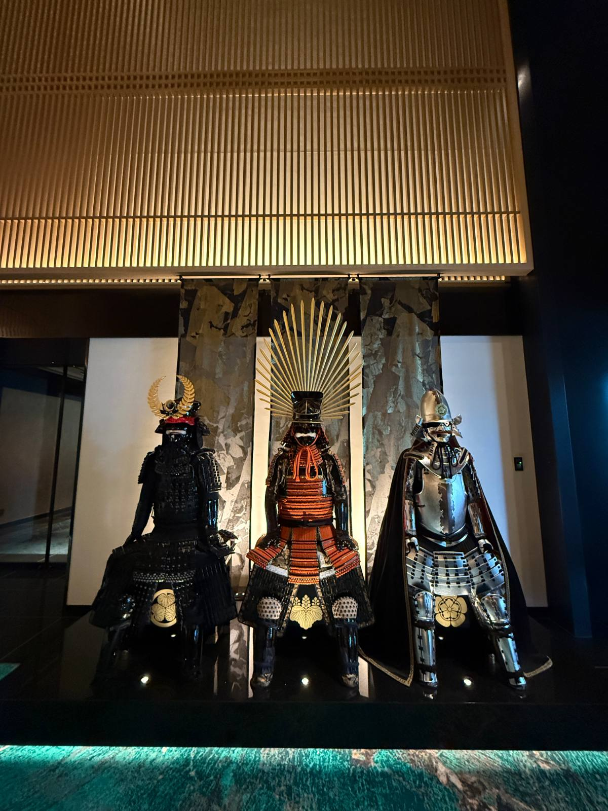
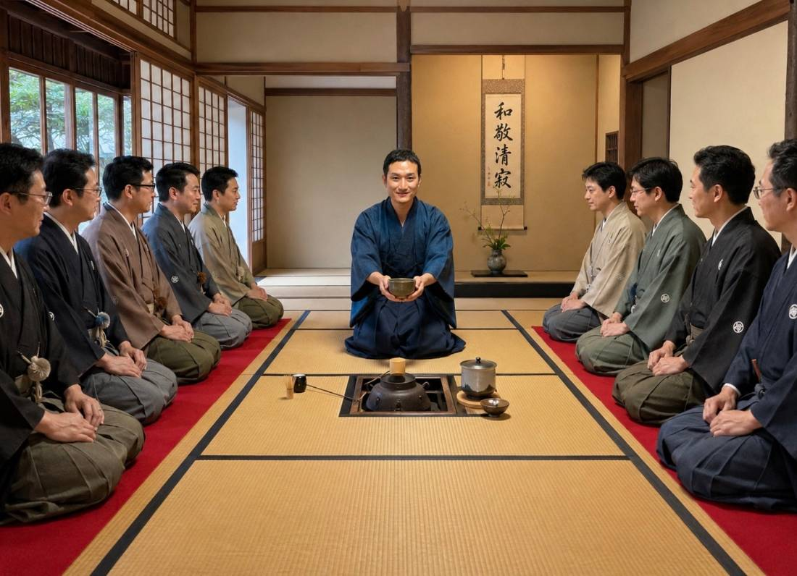

今回、世界へ提案する体験
 SPECIAL JOURNEYS
SPECIAL JOURNEYS

流鏑馬 甲冑 茶道 ※イメージ 
創作料理
名古屋・愛知から、五つの束で持っていきます。
単品でも、1日でも、既存ルートへの差し込みでも組めるように整理してあります。

BUDO & CULTURE武道と文化
実際に稽古が行われている道場で。見学ではなく、やってみる側に立ってもらいます。
- 弓道
- 茶道
- 書道
- 居合
- 禅
CRAFT
工芸
1608年から続く藍染をはじめ、職人の手元に直接入ります。（この枠は写真準備中。10月に実写へ差し替え予定）
- 有松絞り
- 尾張七宝
- 瀬戸焼
- 鉱山見学

FOOD食
名古屋めしから、料亭・ファインダイニングまで。最大100名規模のマグロ解体にも対応します。
- マグロ解体＆寿司
- ひつまぶし・うなぎ蒲焼
- 味噌煮込みうどん手打ち
- 料亭／ファインダイニング

INDUSTRYものづくり・産業観光
自動車産業をはじめ、この地域が世界に知られている理由そのものを見てもらいます。
- 自動車産業の産業観光
- ものづくり視察
- 企業研修
SPECIAL JOURNEYS特定の市場に向けた旅
「日本文化を体験する」ではなく、その旅行会社の顧客の目的から逆算して組み立てる4本。
- Muslim-Friendly Peace Journey
- Wellness & Longevity
- Educational Travel
- VIP / UHNW Private Nagoya

